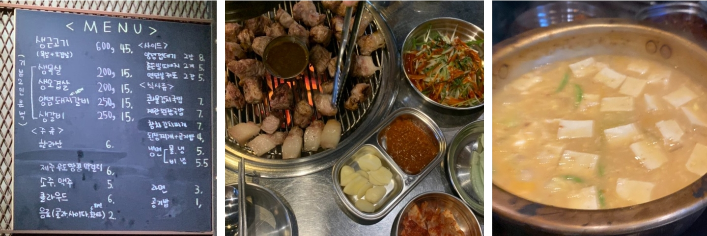

나의 이직 이야기 - 4
- 임소장3 -
임소장이 입사한지 일주일이 지났다.
본사 지원부서는 끝내 소장 개인 집무실을 허락하지 않았다.
소장과 지원부서 담당자는 나를 중간 매개체로 며칠 째 핑퐁을 치고 있다. 서로 맞대면 해서 싫은 소리 직접하기 싫고, 그 누구도 중재하기 싫은 거다. 기분이 나쁘진 않다. 회사 생활에 익숙해지면서 감정이 무뎌질대로 무뎌졌다.
지원부서 담당자는 규정상 개인 집무실은 최고 직급에게만 제공된다는 답변만 반복했다.
☞ 최고직급은 1직급. 소장은 계약직이며 2 직급.
소장은 일주일 동안 본사를 설득하라고 고집했다.
오늘에서야 회의 테이블과 칸막이를 설치하는 것으로 협의를 봤다.
소장이 입사를 늦추는 바람에 사무가구 시공업체는 사무실을 알아서 공사하고 이미 떠났다.
할 수 없이 나를 포함한 C팀 사람들이 지하창고에서 파티션을 짊어지고와 망치를 두들겨 가며 공사를 했다.
한번쯤 스윽 내다보며 고맙다는 제스처를 취할법도 한데,
소장은 작업시간 내내 자리에 앉아서 PC 모니터만 무심하게 쳐다본다.
초반부터 한국식 인사치레는 전혀 없구나…. 아메리칸 스타일인가?
일과를 마치고 시간이 되는 사람들 몇을 모아 연탄구이집에서 늦은 식사를 한다.
오박사에게는 물어보지도 않았는데 저 뒤에서 우리 무리를 따라온다.
연탄구이집까지 따라와서 우리 테이블에 동석한다.
웃으면서 재잘거리다가, 오박사가 오니 다들 하던말을 멈춘다.
눈치만 보다가 취기가 오르자 다들 한마디씩 하기 시작했다.
‘소장님 좀 이상하지 않아요? 불필요한 요구사항도 이것 저것 많고 신혼여행 간다고 회사도 안나오고요.
기존 상사들보다 더 권위적인 것 같아요.’
오박사가 기다렸다는 듯이 말을 쏟아낸다.
‘내가 보기엔 능력도 없고! 생각하는 것도 딱 어린애야 어린애!
내눈에는 양복입은 어린애로 밖에 안보여!’
오박사의 설교는 30분간 계속됐다.
어르신이 하는 말씀이라 음식을 먹지도 못하고, 타는 고기를 곁눈으로 봐야만 했다.
겉으로는 베시시 미소를 지으며, ‘허허’, ‘네네’하고 오박사 이야기에 동조하는 시늉을 했다.
오박사 말을 전적으로 수긍하기는 어려웠다.
그러기에는 오박사와 소장의 성격이나 행동에 공통 분모가 너무 많았다.
한시간 가까이 혼자 연설하시는 오박사님.
‘저, 박사님? 내일 연구소 개소식이라 일찍 일어나야 할 것 같습니다.’
‘그래? 아무튼 문제가 많아. 다 먹었지? 이제 일어 나자구.’
오늘 저녁식사 망했다.

직원들과 삼삼오오 모여 뒷담화와 고충을 늘어놓던 연탄구이집. 가격은 좀 되지만 생근고기 세트와 된잡국밥 코스는 회포를 풀기에 충분하다.